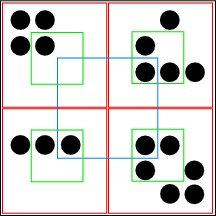

Figure 3: Why a simple recursive algorithm will not work. The black outer square represents the area of a node; the four red inner squares are the subnodes. I want to calculate the area of the blue inner square in the next generation, but the inner squares of the subnodes are the green squares, which cannot be combined to form the blue inner square because they do not overlap it.
Back to Article